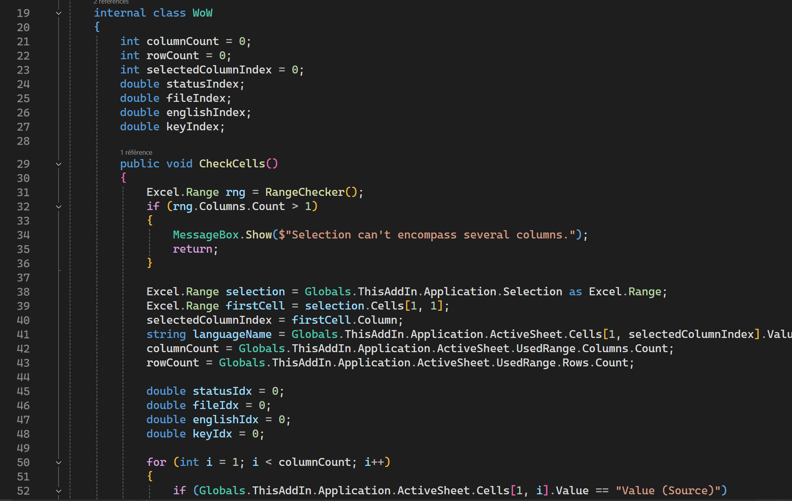
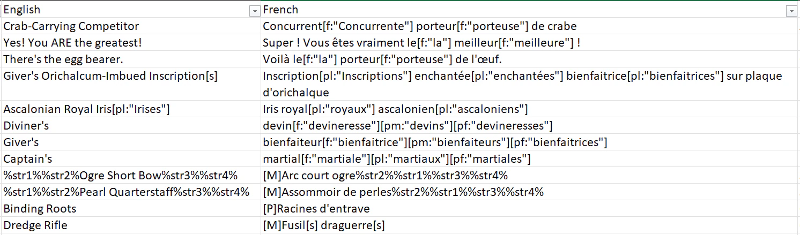
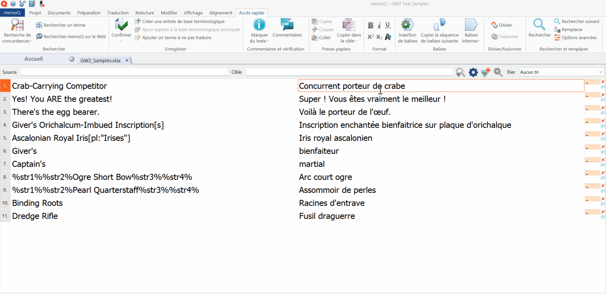
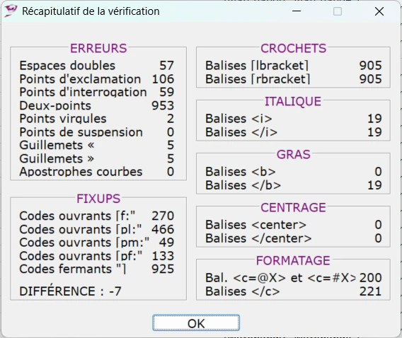
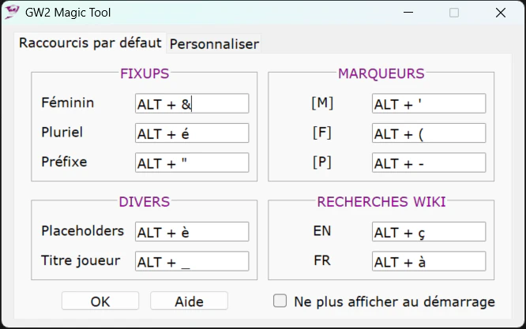

Program Portfolio
World of Warcraft Toolbox
Series of Excel add-in tools developed in C# during the translation of World of Warcraft.
As World of Warcraft localization files can contain thousands of strings and complex runtime variables, manually reviewing translations was both time-consuming and prone to human error. The style guide provided many rules and guidelines to follow, but ensuring compliance was challenging. To streamline the QA process and reduce the risk of inconsistencies and player-facing issues, I developed a set of specialized tools focused on text rendering, automation, and validation.
Error Report Tool
This tool is designed to automate the detection and reporting of localization issues, ensuring that translations adhere to the style guide, comply with linguistic rules, and are free from errors that could impact the in-game experience.

Features:
- Automatically detects the selected target language to check in multilingual exports
- Applies language-specific validation rules
- Validates all localization tokens against the source text
- Detects missing, malformed, or unauthorized variables
- Enforces style guide and typography rules
- Validates gender and plural token syntax
- Detects issues that may affect in-game text rendering or gameplay
- Highlights problematic text whenever possible
- Provides detailed error reports with actionable feedback
Text Rendering Tool
Reviewing localization files directly in spreadsheets or CAT tools often makes it difficult to visualize how text will actually appear in-game, especially when dealing with complex markup and dynamic content.
This tool converts World of Warcraft's custom markup into formatted HTML, allowing reviewers to inspect and spellcheck translations efficiently without being distracted by raw markup codes.

Features:
- Converts game-specific markup into HTML formatting for easier review
- Inserts game icons and visual elements to reproduce the final in-game presentation
- Generates gender and plural variants automatically, allowing both versions to be spellchecked and reviewed
- Produces a browser-ready preview, making UI and formatting issues easier to spot
These tools together streamline the localization review process, making it more efficient and less error-prone. They helped detect and correct hundreds of localization issues that might have otherwise gone unnoticed.
Guild Wars 2 Localization Automation Tool
While working on Guild Wars 2, I encountered a number of repetitive localization tasks that slowed down the translation process and increased the risk of formatting errors.
French localization regularly required the creation of gender and plural variants, the insertion of localization markers, terminology lookups, and numerous quality assurance checks. While these tasks were essential, they consisted mostly of repetitive text manipulation rather than actual translation work.
To streamline this workflow, I developed a standalone automation tool using AutoHotkey.
The Challenge
Guild Wars 2 uses specialized localization markup to support grammatical variations such as gender and plural forms.
Creating this markup manually hundreds of times throughout the project was repetitive, time-consuming, and could cause human errors.

Translators also needed to perform additional tasks such as:
- Verifying localization codes and formatting tags
- Looking up terminology on official Guild Wars wikis
- Preparing text for proofreading and spellchecking
- Checking compliance with style-guide requirements
The Solution
I created a keyboard-driven automation tool designed to integrate directly into the translator's daily workflow.
When a translator selects a word or phrase requiring a grammatical variant, a keyboard shortcut automatically generates and inserts the appropriate Guild Wars 2 localization markup.
The tool also provides quick-access commands for inserting common localization markers, launching terminology searches, and performing quality assurance checks.
As the application runs in the background and is controlled almost entirely through shortcuts, it keeps the workflow fast and efficient.

Features:
- Token generation:
Automatic creation of gender, plural, and multi-form localization markup based on the translator's selection - Terminology lookup:
Instant searches of selected terms on official Guild Wars wikis - Quality assurance:
Automated checks for common formatting and localization issues, including double spaces, incorrect punctuation spacing, unbalanced markup, damaged localization tags, and formatting inconsistencies - Proofreading preparation:
Text export from Excel into Word and automatic cleanup of localization codes and placeholders using a macro for review and spellchecking - User interface:
Setting panel to customize hotkeys for the different features


Impact
This tool reduced repetitive manual operations throughout the localization process and helped avoid errors across large volumes of translated content.
More importantly, it allowed translators to spend less time manipulating markup and more time focusing on translation quality.